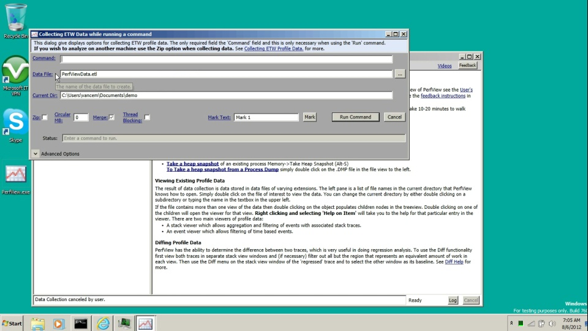
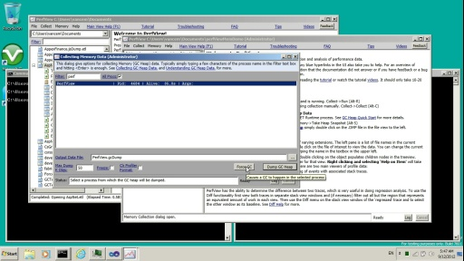

A series of video tutorials by Visual Studio performance architect Vance Morrison on how to use the PerfView profiling tool to gather data for CPU performance of a simple .NET program.
PerfView Tutorial 0 - Getting PerfView[WMV] [2012/07/17]If you have an internet connection you are just a few clicks away from installing perfView. This video shows you just how easy it is. It is best to watch the video using one of the high quality li…
PerfView Tutorial 1 - Collecting data with the Run command[WMV] [2012/07/17]This is the first of a series of video tutorials on how to use the PerfView profiling tool to gather data for a CPU performance data on a simple .NET program. It is best to watch the video using on…
PerfView Tutorial 2 - A Simple CPU Performance Investigation[WMV] [2012/07/18]This is the second of a series of video tutorials on how to use the PerfView profiling tool. This tutorial assumes you have watch the first tutorial on collecting data. It is best to watch the vide…
PerfView Tutorial 3 - Resolving Symbols[WMV] [2012/07/18]This is the third in a series of video tutorials on how to use the PerfView profiling tool. It is best to watch the video using one of the high quality links on the right so the text is readable. …
PerfVIew Tutorial 4 - Grouping And Folding[WMV] [2012/07/18]This is the fourth in a series of video tutorials on how to use the PerfView profiling tool. It is best to watch the video using one of the high quality links on the right so the text is readable. …
PerfView Tutorial 5 - The Drilling Into Feature[WMV] [2012/08/07]This is the fifth in a series of video tutorials on how to use the PerfView profiling tool. It is best to watch the video using one of the high quality links on the right so the text is readable. This…
PerfView Tutorial 1.1 Data Collection for Server Scenarios[WMV] [2012/08/07]In the first tutorial we used the 'Run' command to caputure data while an executable ran. However for server scenarios you simply want to explicitly state when to start and stop data collection. I…
Perfview Tutorial 6 - The Event Viewer Basics[WMV] [2012/08/19]In the first tutorial we used the 'Run' command to caputure data while an executable ran. In tutorial 2-5 we learned how to use the StackViewer to do a CPU investigation. In this tutorial we learn mor…
PerfView Tutorial 7 - Using the Event Viewer in ASP.NET Scenarios[WMV] [2012/08/19]In the previous video learned the basics of using the event viewer. In this video we use that knowledge in a common scenario: investigating the performance of an ASP.NET server scenario. The video dis…
PerfView Tutorial 8 - Generating Your Own Events with EventSources[WMV] [2012/08/19]It may be that the ASP.NET events discussed in the previous video are diagnosting the performance of you service. However it not (or you are not using ASP.NET), you will want to log your own ETW even…
PerfView Tutorial 9 - .NET Memory Investigation: Basics of GC Heap Snapshots[WMV] [2012/09/13]This video describes the basic information you need to start a NET memory investigation and in particular understand the data shown you in a .NET GC snapshot. The first step in doing .NET Memory inv…
Tutorial 10 - Investigating .NET Heap Memory Leaks :Part1 Collecting the data[WMV] [2012/09/13]This video is the first in a two-part video on investigating a GC memory 'leak'. This video discusses a real world memory leak that was found and corrected in PerfView itself. This first part disc…
Tutorial 11 - Investigating .NET Heap Memory Leaks :Part2 Analyzing the data[WMV] [2012/09/13]This video is the second in a two-part video on investigating a GC memory 'leak'. This video discusses a real world memory leak that was found and corrected in PerfView itself. If you have not wat…
Tutorial 12 - Wall Clock Time Investigation Basics[WMV] [2012/11/27]This is the first of a set of video tutorials on how to do wall clock time investigations with PerfView. It is best to watch the video using one of the high quality links on the right so the text is…
Tutorial 13 - Leveraging Tasks make sense of Parallel/Asynchronous programs [WMV] [2012/11/29]This is the second of a set of video tutorials on how to do wall clock time investigations with PerfView. It is best to watch the video using one of the high quality links on the right so the text i…
Tutorial 14 - Investigating Wall Clock Responce Time in ASP.NET Scenarios [WMV] [2012/11/29]This video is about doing a wall clock time investigation of ASP.NET scenarios using the PerfView tool. It is best to watch the video using one of the high quality links on the right so the text is r…